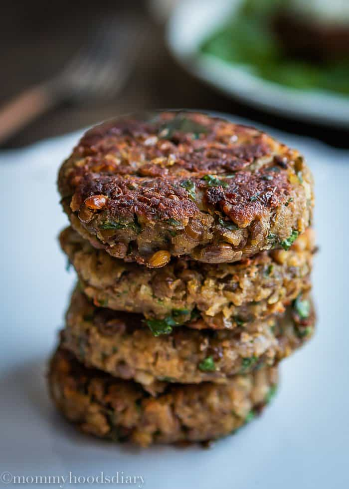

Lentil Cakes

A delicious vegetarian dish served with Zhoug sauce infused yogurt
These lentil cakes are made with fresh ingredients that have a ton of flavor.
To find the recipe for Zhoug sauce, click the link below. Many steps can be
prepped ahead of time!
Ingredients
- 2 cups cooked lentils
- 1 tbsp olive oil
- 1/2 red onion, diced
- 4-6 garlic cloves, rough chopped
- 8 oz mushrooms, sliced
- 1/2 cup rolled oats
- 1/2 cup walnuts (sub pecans or cashews)
- 1 tsp cumin
- 1 tsp coriander
- 3/4 tsp salt
- 1 tbsp ground flax + 3 tbsp water (or sub 1 egg)
- 1 tbsp soy sauce
- 1/4 cup parsley (or cilantro), chopped
- 1 cup plain yogurt
- 1-2 tbsp Zhoug sauce
Directions
- Cook 2/3-3/4 cup dry lentils in simmering water until tender. Drain.
- In the mean time, saute the onion, garlic and mushrooms in olive oil over medium heat for 5 min. Add water if needed.
- Lower heat and cook until very tender.
- In a food processor, blend the oats into a course flour. Add walnuts, pulse 10 times.
- Add half of the lentils, half of the mushroom mixture, salt, and spices.
- Add flax mixture (or egg) and pulse until well combined and forms a thick dough.
- Scrape into medium bowl and stir in the remaining whole lentils and fresh herbs.
- Using wet hands form 8-10 little cakes or 4-5 burger patties.
- Sear patties in a skillet, in a little oil, over medium heat, making sure they brown well before flipping.
- Serve with the remaining mushrooms and Zhoug yogurt.
- To make zhoug yogurt, stir 1-2 tbsp zhoug sauce into yogurt and add salt and lemon to taste.